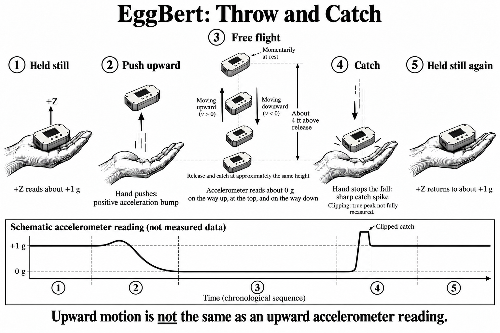

Throw and Catch
Current controls
- Select ARM, then hold EggBert still for one second until READY appears.
- Release or throw it. Freefall triggers the recording.
- Wait for DONE. The stored window contains about half a second before the trigger and four and a half seconds afterward.
- Download and save the recording before erasing or switching off.
Both versions record low-g acceleration at nominal 3,840 samples per second. V2 also records the paired ±320 g stream. The viewer defaults V2 files to Automatic while preserving both original streams.
A completed capture is protected. MID OPT opens its options; erasing requires a separate YES confirmation. Keep EggBert powered until your file is saved.
The experiment illustration below shows an earlier screen arrangement. Follow the current controls above.
